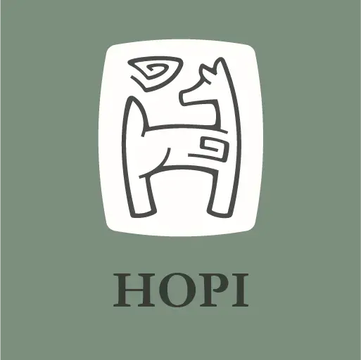
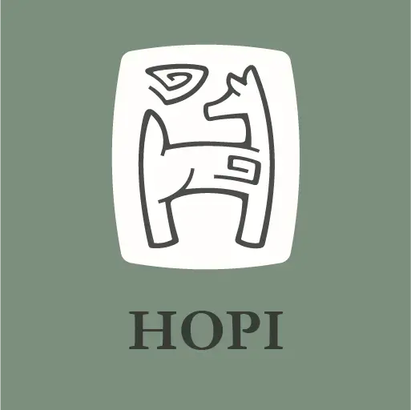
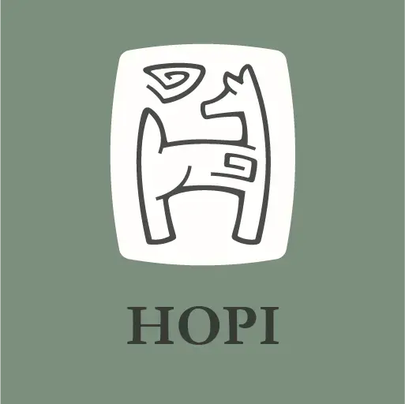

Hi, I’m Taj. I’m a designer living in Boulder,
Colorado. My passion is creating beautiful and impactful designs
for socially and environmentally conscious organizations.
Keep scrolling to see some of my work, or click the button below
to get in touch.
My work
I have a broad skillset, including web development, design and
creative writing. I’ve had the opportunity to put these
skills to work
MAD Courses
MAD Courses
is a social business, founded to educate young people about
indigenous wisdom and environmental stewardship. They offer
unique online courses, made in collaboration with local tribes
in the Philippines.
I redesigned MAD’s website, and crafted a style guide to
help them maintain a cohesive message across their work.
Excerpts from the MAD style guide:
I also crafted a library of reusable graphics for MAD, which fit
their needs as a small startup. You can read more about that
process in the case study:
Carbon Pardon
Carbon Pardon
is a tongue-in-cheek climate change awareness campaign. Inspired
by catholic indulgences, the website offers physical or digital
"pardons" which absolve users of their greenhouse emission
"sins." Proceeds go to hand-picked reforestation projects.
The Carbon Pardon logo combined decorative capitals from
enlightened manuscripts with the carbon elemental
symbol.
Physical carbon pardons were printed on paper
inpregnated with plantable seeds.
The Beginner’s Guide to Changing the World
I collaborated with a local Boulder nonprofit, Climatique, who
is working to make sustainable living less scary — and
more fun. We created an zine to introduce folks to concepts
related to activism and the polycrisis.
Excerpts from the Climatique zine:
The zine presents heavy topics and unfamiliar concepts with both
tact and levity. These were handed out at a local concert venue,
accompanied by live protest music and good company.
Days of Type
In 2023 I began a project to keep my brand design skills sharp
while I studied for my Bachelor’s degree. Since then
I’ve been designing a logo for each letter of the
alphabet.
The logos I’ve designed so far:

It’s been a great way to hone my craft, and I also get to
excercise my imagination and invent a fictional business for
each logo.
Contact me
Get in touch with me at
email placeholder, or fill out the
form below.


 
